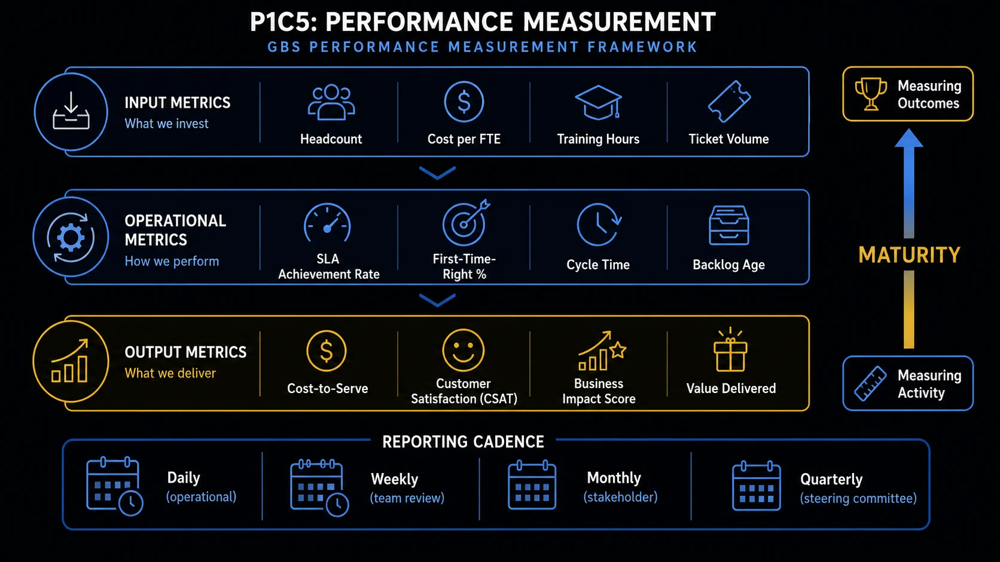

Performance Measurement What gets measured gets managed. What gets ignored becomes a problem.
Metrics are not bureaucracy. In GBS, they are the shared language between the center and the business — the objective basis for every improvement conversation, every capacity decision, and every escalation that does not turn into a blame game.
Why metrics matter — and what they actually do
Measurement provides an objective basis for a conversation that would otherwise be purely political.
- Process management: real-time visibility into whether a process is running as designed — volume, quality, and speed in one view
- Process improvement: trend data reveals where degradation is happening, before it surfaces as a stakeholder complaint
- Objective service conversations: when the business says the service is poor and GBS disagrees, metrics provide a shared reference point rather than a clash of perceptions
- Capacity planning: volume trends versus team capacity is the single most important leading indicator a GBS team can track — everything else is lagging
- Escalation management: metrics establish the threshold at which an issue formally escalates — removing ambiguity about when to act
- Benchmarking: external benchmarks from SSON, Hackett Group, and industry peers allow GBS to position its performance in a market context, not just against internal history
Metrics are only as good as the data feeding them. Most GBS organizations run on ERPEnterprise Resource Planning — integrated software system managing core business processes. SAP and Oracle are the dominant GBS ERP platforms. systems (SAP, Oracle) that contain rich transaction data.
But many also have workflow tools, legacy systems from acquired entities, and manual enrichment layers that create reliability gaps. A metric built on poor source data produces confident-looking numbers that do not reflect reality. Before debating what to measure, establish whether you can measure it reliably.

From measuring activity to measuring outcomes — the GBS performance framework
The three-layer KPI framework: input, operational, output
A flat list of metrics misses causality. A layered framework tells you not just what happened — but why, and where to look to fix it.
Input metrics — what we invest
- Accuracy rate — % of transactions processed without errors
- FPY — First Pass Yield — % processed correctly on first attempt, no rework
- Rework rate — % of items returned for correction
- Exception rate — % of transactions requiring manual intervention or override
- Error correction cost — FTE time consumed by rework vs. productive processing
- Cycle time — end-to-end time from receipt to completion of a transaction
- TAT — Turnaround time — time from trigger event to output delivery
- SLA compliance rate — % of transactions processed within agreed time window
- DSO — Days Sales Outstanding — average days to collect receivables (O2C)
- DPO — Days Payable Outstanding — average days to pay suppliers (P2P)
- Open item count — total unprocessed items at point in time
- Aging analysis — backlog segmented by age (0–30, 31–60, 60+ days)
- Month-end backlog — open items at close — the hardest measure to hide
- Volume vs. capacity ratio — incoming volume tracked against FTE availability
- Throughput per FTE — transactions processed per person per period
Standard KPIs by process — P2PProcure-to-Pay — end-to-end process from purchase requisition through supplier payment. Core AP process in GBS., O2COrder-to-Cash — end-to-end process from customer order through cash collection. Core AR process in GBS., R2RRecord-to-Report — end-to-end process covering general ledger, reconciliations, period close, and financial reporting.
Naming conventions vary. Calculation methodologies vary more. What follows is the standard set — expect 5–10 of these per workstream, selected based on what the underlying system landscape can reliably provide.
Standard metrics. Naming and calculation methods vary by organization and ERP configuration. Source: SSON Analytics, HighRadius, Chazey Partners, Opsdog.
Operational metrics — how we perform
The backlog trap — why it compounds faster than you expect
Backlog is not a static problem. It is an accelerating one. Most teams underestimate how quickly a manageable backlog becomes a recovery crisis.
When a backlog starts growing, the workload to recover does not grow linearly. It grows exponentially. Old items require investigation, stakeholder contact, and exception handling that new items do not.
- Aged receivables require escalation.
- Aged invoices accumulate late payment risk.
- Aged reconciliations block the close.
- At the same time, the team is processing the current period's volume.
The result: a team spending significant capacity on recovery while simultaneously falling further behind on current work. The longer the backlog runs, the harder recovery becomes, and the deeper the reputational damage with the business.
- Volume trend vs. capacity: track incoming volume weekly against available FTE hours — the gap between the two is the earliest possible warning signal, before any backlog appears in aging reports
- Aging movement: items moving from 0–30 into 31–60 days is a leading indicator; items entering 60+ are already a problem requiring escalation
- Month-end open item count: the hardest metric to suppress — if close is consistently delayed by open items, the root cause is almost always a capacity or upstream data problem that has been absorbing for weeks
- Exception rate trend: a rising exception rate on an unchanged process usually means data quality from upstream has degraded — fix the input, not just the output
- Throughput per FTE: a declining throughput trend while volume holds steady is the clearest signal of a team under pressure before attrition or absence makes it visible
- Trust and reputation follow the same curve as backlog. A backlog that doubles takes twice as long to clear. The damage to the service relationship does not halve when the backlog is cleared — it lingers. Preventing backlog accumulation is orders of magnitude cheaper than recovering from it.
- The volume-capacity gap is the most important metric nobody consistently tracks. Most GBS reporting focuses on what happened (output KPIs). Volume versus capacity is what is about to happen — it is the only truly predictive metric most teams have access to. Track it weekly, not monthly.
- System landscape dictates what you can measure. SAP and Oracle provide rich transaction datasets. Workflow tools, legacy platforms, and manual workarounds create measurement gaps. Before committing to a KPI, establish whether the data can be extracted reliably — or whether it will require manual enrichment that itself becomes a capacity drain.
The perception gap — when green metrics meet unhappy stakeholders
You can be technically compliant and operationally failing at the same time. Understanding why requires looking at what metrics cannot capture.
- Effort required from the business to make GBS succeed: if the business has to chase, remind, re-send, and manually enrich data for GBS to process it — that effort is real and invisible in GBS output metrics. The KPI shows green. The stakeholder is exhausted.
- Exceptions and exclusions in metric definitions: many GBS KPIs include undisclosed carve-outs — items categorized as exceptions that fall outside the denominator. The measured rate looks strong. The excluded volume is where the problems live.
- Sub-processes that are not measured: improving the measured metric while a related, unmeasured sub-process deteriorates is a common pattern. The KPI improves. The adjacent experience worsens.
- The quality of interactions, not just outputs: a query answered in 24 hours but unhelpfully is SLA-compliant but relationship-damaging. Speed metrics do not capture resolution quality.
- Perception of responsiveness and ownership: stakeholders form service quality judgments based on how GBS behaves during exceptions — not during normal operations. The exception handling is what they remember.
The 80/20 perception gap is documented across GBS and GIC research. Source: Panat, S. — Performance Metrics @ Shared Services, GBSs & GICs (LinkedIn); Auxis GBS Trends 2025.
Output metrics — what we deliver
Reporting and performance conversations that actually work
A performance meeting where KPIs are read aloud is not a performance meeting. It is a presentation. The distinction matters.
Internal process health monitoring
Volume vs. capacity, open item aging, throughput per FTE — the internal "engine room" view.
- Reviewed by team leads daily or weekly — not shared externally
- Acts as early warning before issues become stakeholder-visible
- Standardizing these across centers enables best-practice comparison
Written performance report to stakeholders
The report is the data. The meeting is the conversation.
- Content: KPI summary, trend commentary, notable exceptions, initiatives underway
- Distributed by email before the meeting, not presented during it
- Includes an active issue and action log with owner and due date — carried forward each month until closed
Service review meeting
Joint session with GBS leadership and business stakeholders — KPIs provide the foundation, not the agenda.
- Structured to include: business feedback and experience (not just GBS reporting), open issues review, initiative and success recognition, forward-looking priorities
- Both sides speak — actions are logged
- Follow-up is non-negotiable
- The business has a voice: a meeting where only GBS presents is a lecture. Allocate structured time for stakeholders to share experience, surface issues, and give qualitative feedback not captured in metrics
- Issues are logged, not discussed and forgotten: an active issue register with named owners and deadlines distinguishes a functional governance cadence from a compliance theater exercise
- Success and recognition are included: performance conversations that only surface problems train stakeholders to save their feedback for escalations. Recognizing improvements builds the relationship that makes honest feedback possible
- Actions from last meeting are reviewed first: if prior actions are not reviewed, the meeting has no institutional memory — each session starts from scratch, and nothing accumulates
- KPIs tell a story — they do not replace one: the narrative around why a metric moved, what was done in response, and what to expect next is what converts data into trust
Reporting cadence — daily to quarterly
AI and the future of performance measurement
Traditional KPI reports are backwards-looking. AI-enabled measurement changes what is possible — and GBS should be leading this shift, not waiting for it.
From reporting to prediction
AI-enabled analytics can identify performance degradation patterns weeks before they appear in standard KPI reports — flagging anomalies in transaction data, exception rates, or throughput that precede visible backlog accumulation.
Working capital intelligence
Predictive DSO and DPO modeling — based on collection behavior patterns, payment terms trends, and dispute volumes — gives Treasury forward visibility for working capital bridges and liquidity planning that backward-looking KPIs cannot provide.
Finance function contribution
GBS teams with access to asset, accrual, and transaction data can generate P&L line projections that directly support planning cycles — moving from execution support to analytical contribution in the finance function.
People risk forecasting
Volume trends, throughput data, and workforce patterns can be used to model capacity risk before it materializes — identifying periods where backlog accumulation is structurally likely and enabling proactive resource decisions rather than reactive ones.
New GBS teams are positioned to build AI-enabled measurement from the start — without legacy reporting infrastructure to displace. The insight opportunity is significant: GBS sits at the intersection of transaction data, financial data, and workforce data. The organizations that learn to use this data proactively — rather than just reporting on it retrospectively — will be the ones that make the shift from cost center to genuine strategic partner credible.
- SLAs are table stakes — they tell you whether you met the minimum. The real career differentiator is understanding what drives your scorecard and where you personally contribute to improving it. When your manager presents quarterly results, can you point to a number and say "I moved that"? If not, start tracking.
- Most GBS professionals see the scorecard once a quarter and forget about it. The top performers check their team KPIs weekly and flag trends before they become problems. Proactive is always better than reactive when it comes to performance data.
Key terms in this cluster
Underlined terms throughout this page link here. Full cross-pillar glossary at the GBS Insider Club Field Guide glossary.
- SSON Research & Analytics — Mastering Metrics: 5 Essentials for Excellence (2024)
- SSON Research & Analytics — Mastering KPIs: 14 Essential Metrics to Drive Shared Services Success
- Chazey Partners — How to Nail Your Performance Measurement in Shared Services
- HighRadius — 23 KPIs for Shared Services: From Process Manager to Strategic Leader
- Opsdog — Shared Services KPIs, Metrics & Benchmarks
- Panat, S. — Performance Metrics @ Shared Services, GBSs & GICs (LinkedIn)
- SSO Network — What Metrics Should Finance Shared Services Be Tracking? (2024)
- Auxis — 10 Shared Services Trends Shaping the GBS Industry in 2025
- BCG — Shared Services Value Creation Study (2024), cited in Auxis GBS Trends 2025
- ✓ KPI framework — quality, time, backlog, and the input/output distinction
- ✓ KPIs by process — standard metrics for P2P, O2C, R2R, and HR
- ✓ The backlog trap — why compounding makes early detection critical
- ✓ The perception gap — what metrics cannot see and why it matters
- ✓ Reporting that works — cadence, format, and what makes a meeting productive
- → Location Strategy and Hub Design — where GBS centers are built and why — Cluster 6
Want the full breakdown on video?
GBS performance measurement covered in depth on the GBS Insider Club YouTube channel — with real examples, frameworks, and career implications.
▶ Subscribe on YouTubeKnowing the frameworks is the entry ticket. Applying them — visibly, at your actual job — is what gets you promoted.
The GBS Insider Club Career Paths turn this theory into a guided 90-day program for your role: self-assessment, practical exercises, templates, and Julian's unfiltered practitioner playbook.
Explore the Career Paths → Back to GBS Fundamentals